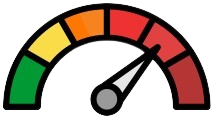
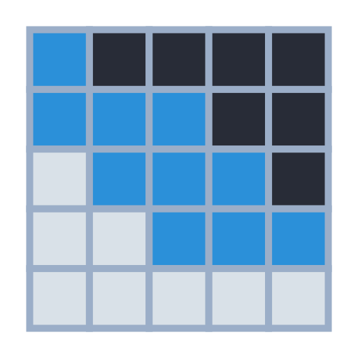

 Gráficas de Contaminantes
Gráficas Meteorológicas
Mapa de Beijing
Selecciona una fecha:
Visor por Hora de Contaminantes
Visor por Hora de Meteorologia
Parametros para comparar contaminantes
PM2.5
PM10
SO2
NO2
CO
O3
Seleccione Estación:
Día Específico
Rango de Fechas
Correlacion de contaminantes por dia